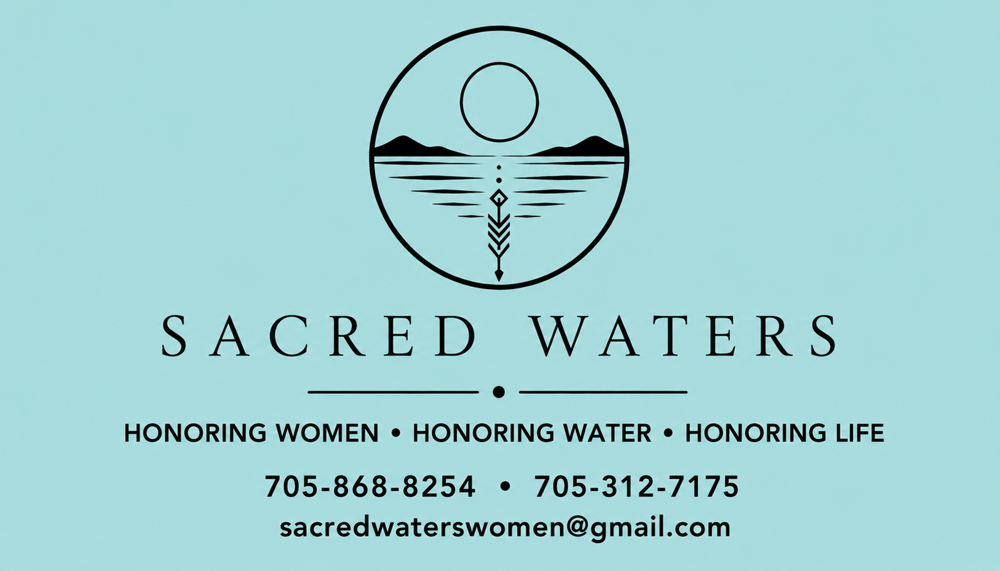
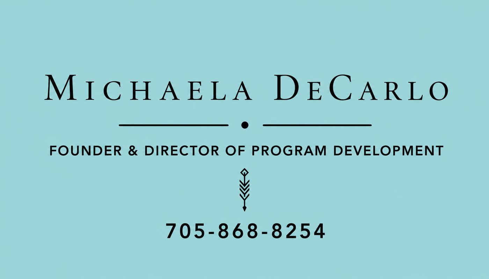
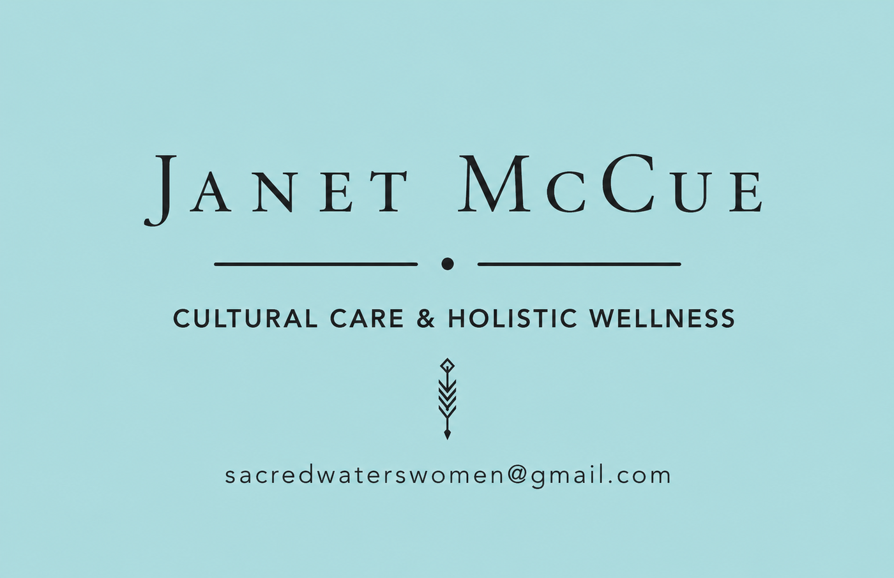
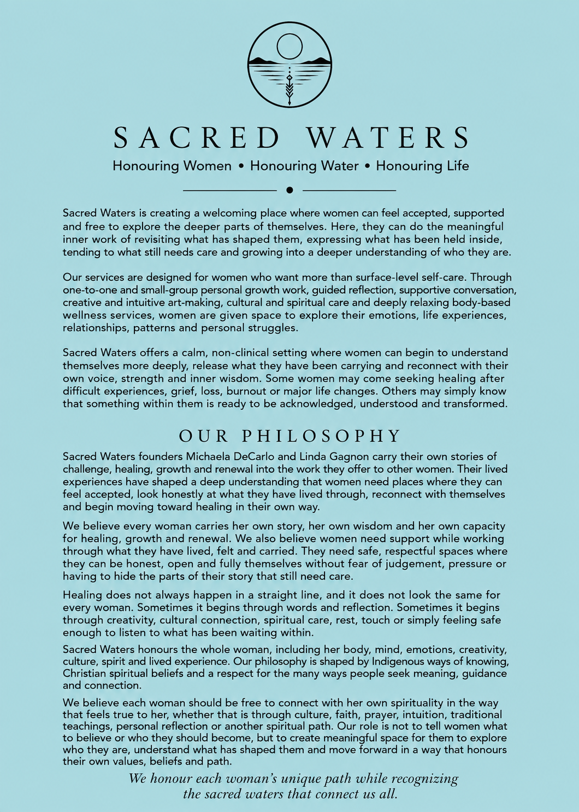
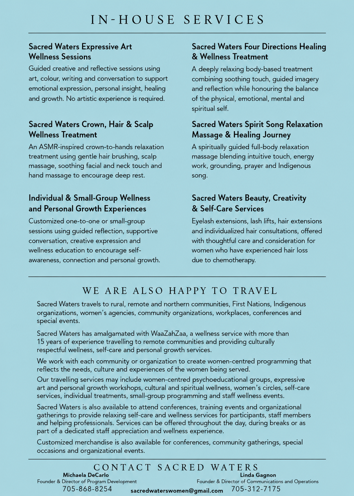

Expressive Art Wellness Sessions
Guided creative and reflective sessions using art, colour, writing, and conversation to support emotional expression, insight, healing, and growth. No artistic experience required.
Honouring Women • Honouring Water • Honouring Life
Sacred Waters supports women through expressive art, holistic wellness treatments, spiritual reflection, personal growth experiences, and community-based programming.
Serving women, organizations, workplaces, conferences, events, rural and remote communities.

Sacred Waters creates a welcoming place where women can feel accepted, supported, and free to explore the deeper parts of themselves. Every session is shaped with gentleness, respect, and room for each woman’s unique path.
Whether you are looking for one-on-one care, a small-group experience, a women’s circle, or services for an event, the goal is simple: help women feel grounded, seen, and restored.
Services
Programs can be customized for individuals, small groups, organizations, workplaces, conferences, and community events.
Guided creative and reflective sessions using art, colour, writing, and conversation to support emotional expression, insight, healing, and growth. No artistic experience required.
An ASMR-inspired crown-to-hands relaxation treatment with gentle hair brushing, scalp massage, soothing facial and neck touch, and hand massage for deep rest.
One-to-one or small-group sessions using guided reflection, supportive conversation, creative expression, and wellness education.
A deeply relaxing body-based treatment with soothing touch, guided imagery, and reflection honouring the physical, emotional, mental, and spiritual self.
A spiritually guided full-body relaxation massage experience with intuitive touch, energy work, grounding, prayer, and Indigenous song.
Eyelash extensions, lash lifts, hair extensions, individualized hair consultations, and thoughtful care for women who have experienced chemotherapy-related hair loss.
Survivor-led care
These hero sections are built around Michaela DeCarlo and Janet McCue as cancer survivors, with space to expand their personal stories as you send more details.

Cancer survivor • Founder
Founder & Director of Program Development
Michaela brings creativity, intuition, humour, faith, writing, energy work, and lived experience into the heart of Sacred Waters. Her work supports women exploring identity, healing, womanhood, spirituality, and personal transformation.
“Survivor. Thriver. Ever grateful.”

Cancer survivor • Holistic wellness
Cultural Care & Holistic Wellness
Janet supports Sacred Waters through cultural care and holistic wellness, helping create grounded, respectful, women-centred experiences for healing, reflection, and rest.
Care that honours the whole woman — body, spirit, story, and season.
Travel & community programming
Brochure preview


Get a quote
Tell us what you’re planning, how many people you’re supporting, where the service will take place, and the kind of experience you’re looking for.